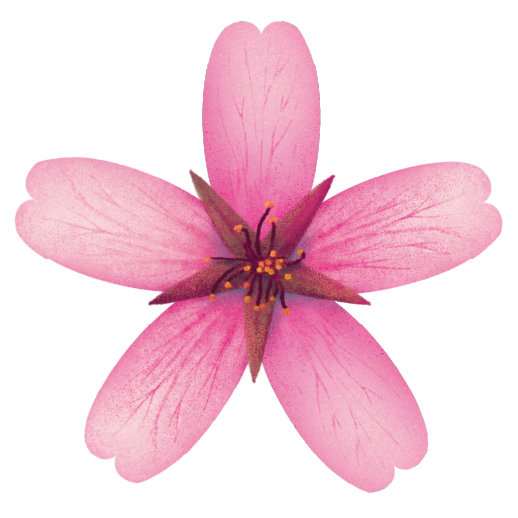
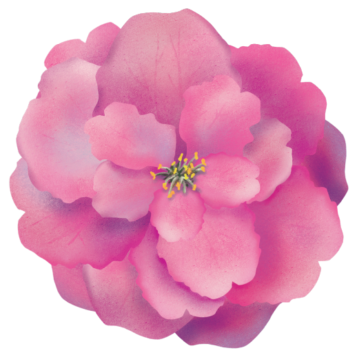
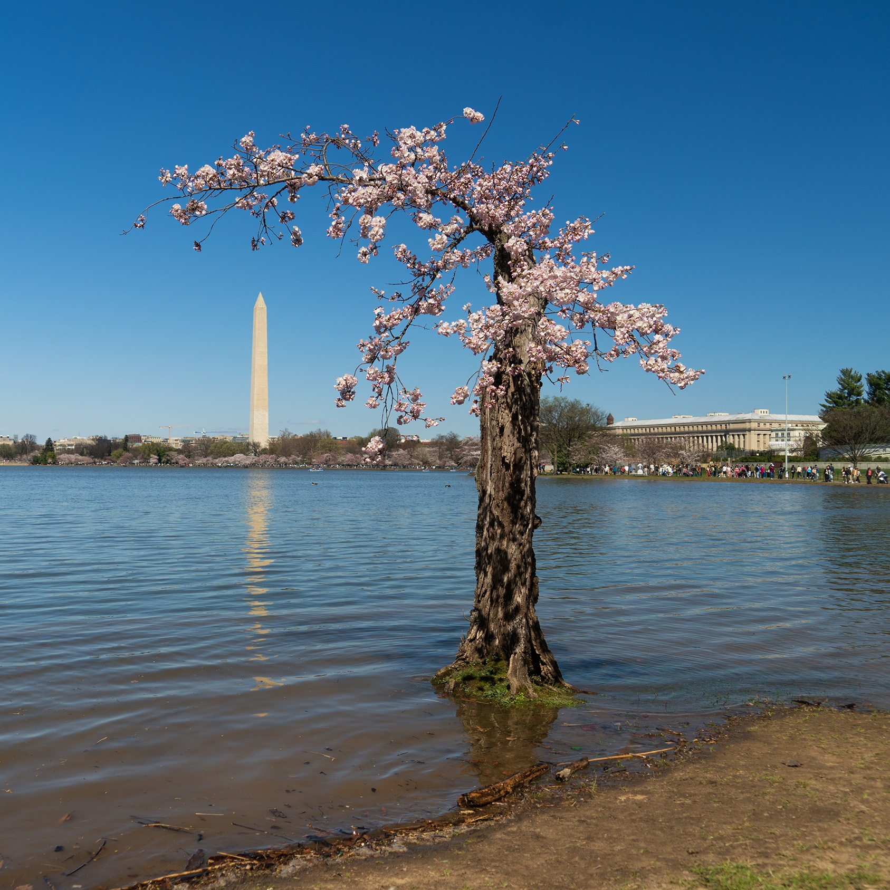

DC in Bloom
March 31, 2026
Story, data visualization, and web development by Sara Staedicke
Illustrations by Mary Koger

It’s official: spring has sprung! The birds are out, the “snowcrete” is gone, and Washington D.C. is at peak bloom. The cherry blossoms are perhaps D.C.’s most celebrated icons. Every spring, they decorate our trains and buses, appear in coffee shop windows, and attract 1.6 million people and more than $200 million in visitor spending as hordes of adoring fans descend on the Tidal Basin to witness their cloudlike canopy. They remind us of new beginnings, the beauty of nature, and international friendship.
Cherry tree species in D.C.
Illustrations by Mary Koger. Species data: Casey Trees (accessed via Hannah Recht/GitHub). Note: Circles scaled based on known counts of cherry tree species in D.C., excludes cherry trees without an identified species.
Thousands of cherry trees call the city home, with varieties ranging from the quintessential Yoshino gifted by Japan, to the ruffly Kwanzan, to North-American species like the chokecherry.
Bloom stages
Certain varieties bloom earlier or later. The Okame is early, typically 1-2 weeks before the Yoshino. The Kwanzan is a late bloomer, usually 10-14 days after the Yoshino. But all cherry trees require a period of dormant chilling over winter and cycle through six bloom stages as spring progresses.
Development depends on local weather forecasts, which can make it impossible to predict when the trees will bloom more than 10 days in advance.
Looking at the last two decades, green buds typically emerge in early March, but development can begin as early as February or as late as March 15.
Temperature is one of the most significant factors influencing when the cherry trees come out of dormancy and how quickly buds develop.
Warm temperatures in February and March can bring trees out of dormancy earlier, like in 2023, 2018, or 2017.
If it stays warm—like in 2012 or 2016 —the blossoms will cycle through development more rapidly. More moderate temperatures can slow development.
Late frosts, strong winds, and rain can also play a role. For example, in 2017, an unexpected late frost on March 14-16 knocked out about half of the blossoms.

2026 trends
This year the district saw prolonged cold temperatures in late January and early February, marking the coldest winter in more than 20 years. However, once we got into March, temperatures quickly rose above the 30-year “normals”, with the exception of a sudden temperature drop that brough snow mid-month after 86 degree heat.
The National Park Service defines peak bloom as when 70% of the Yoshino trees reach stage six. This year, we reached peak bloom on March 26, 3 days before the National Park Service prediction and before estimates from all other major groups like Capital Weather Gang, NBC4, WUSA9, and George Mason University.

An increasingly earlier bloom
The National Park Service has been tracking peak bloom since 1921 (and Japan’s peak bloom records go back 1200 years!). While there is fluctuation year-to-year, the long-term trend has shown increasingly earlier peak bloom, largely due to rising temperatures. Trees in the last decade typically bloom 8 days before they did during the 1920s.
Changing bloom patterns are not unique to D.C.’s cherry trees. Driven by warmer temperatures, spring events in some regions of the U.S. have advanced over 10 days compared to records from the last 200 years, according to the USA National Phenology Network which tracks first leaf and first bloom dates for plant species across the country. If plants bloom before bees and birds arrive, this can lead to a mismatch in timing that has consequences for pollinators and birds.

Other impacts of climate change

Photo by Kevin Ambrose.
D.C.’s cherry trees are also impacted by rising sea levels and recurrent flooding. Some areas of the seawalls have settled as much as five feet from when they were first constructed in the late 1800s and early 1900s, while sea level has risen by about a foot. The result has been twice daily flooding at high tide. In some areas, cherry trees experienced damaging saltwater lapping at their roots daily. Visitors had to navigate flooded paths and partially submerged park benches.
The National Park Service just finished a $113M construction project to rebuild the crumbling seawalls. 158 cherry trees were removed as part of the sea wall construction, including beloved tree “Stumpy” who captured the hearts of thousands with his scrappy charm and quiet resilience.

Video: CBS Sunday Morning, April 7, 2024.
269 new cherry trees were planted this spring, and the National Arboretum is cultivating clones of Stumpy to be planted at the Tidal Basin as early as next year. The recent construction is estimated to withstand about 100 years of future sea level rise.
Exploring our city at its peak
Source: Casey Trees (accessed via Hannah Recht/GitHub).
About this project
CONTRIBUTORS
Sara Staedicke was responsible for the concept, analysis, writing, data visualization and web development.
Mary Koger created the illustrations of cherry tree species and bloom stages.
DATA
Cherry tree species and locations: Casey Trees, 2024 (accessed via Hannah Recht/GitHub). Does not include trees on private property or the recent cherry tree removals and plantings from the seawall construction project.
Bloom dates: National Park Service (Peak bloom and Bloom stages)
Daily average temperature: NOAA National Centers for Environmental Information. Calculated as the mean of min and max daily temperature for Reagan National Airport (USW00013743).
1991-2020 Climate Normals: NOAA National Centers for Environmental Information. Daily temperature normals for Reagan National Airport (USW00013743).
2026 peak bloom forecasts: Cherry Blossom Watch.